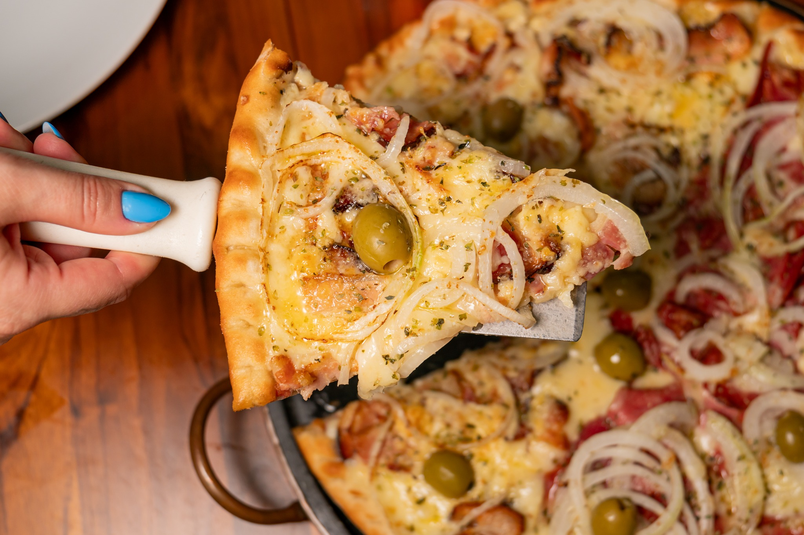
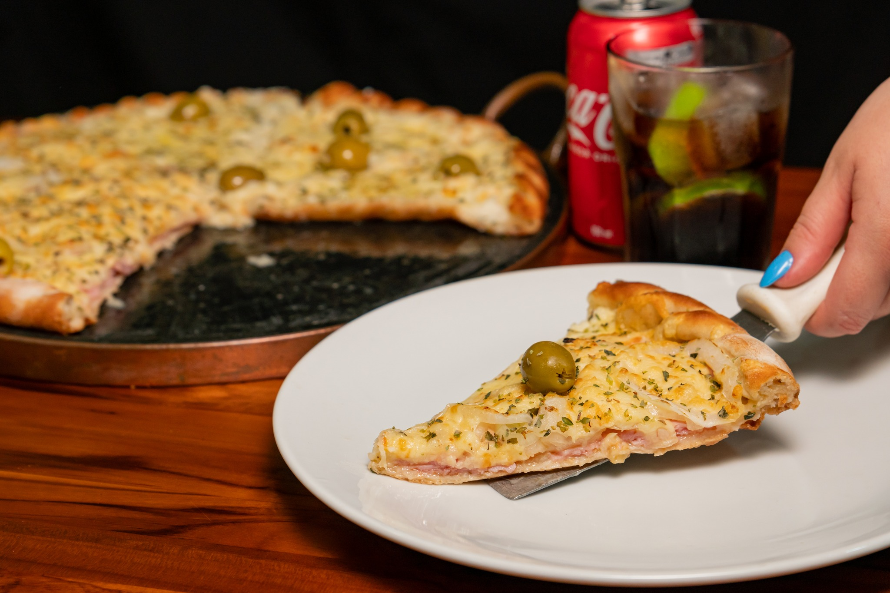
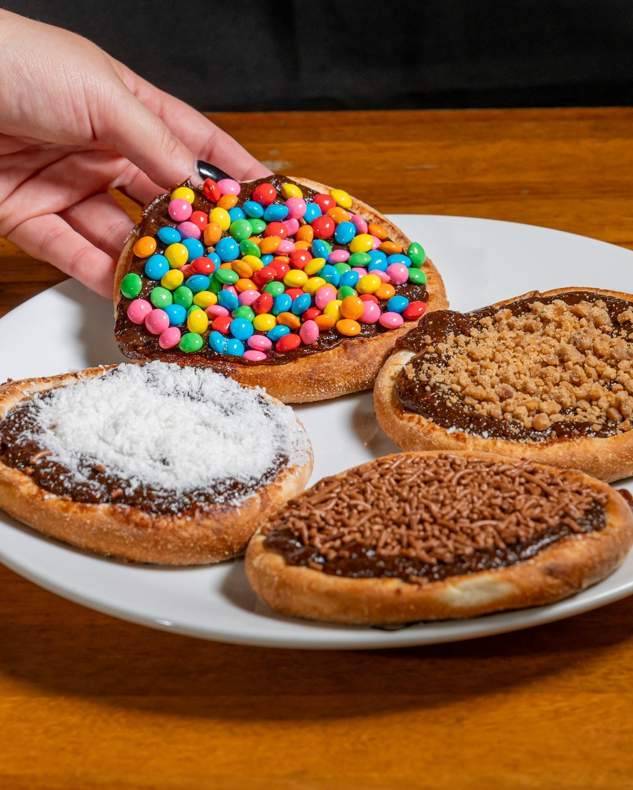
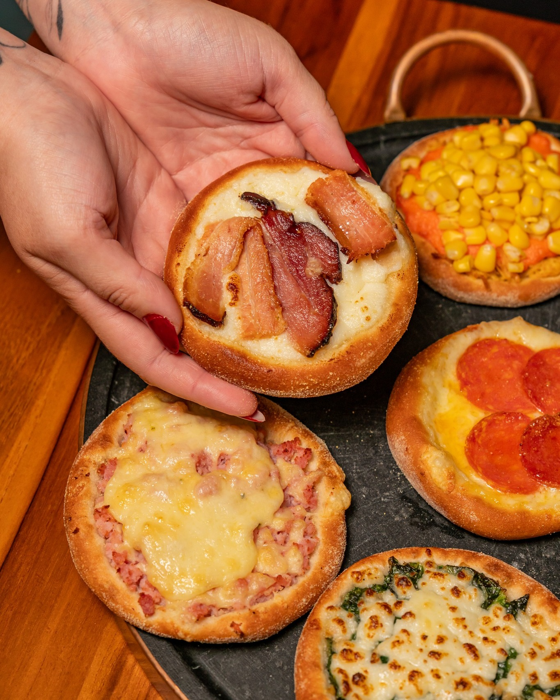
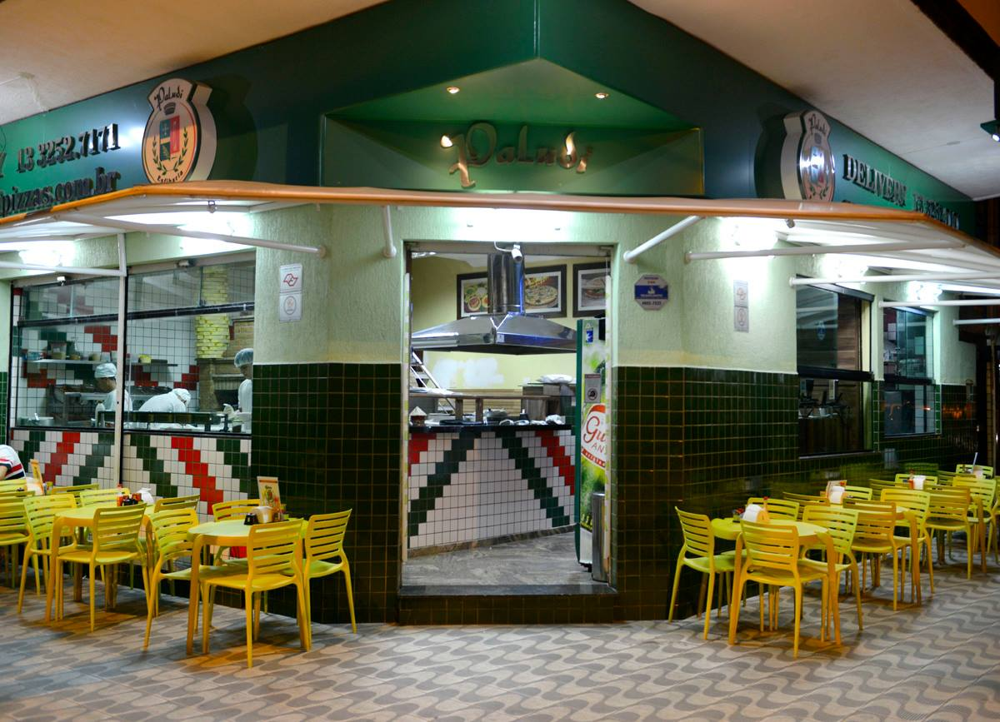

Sabor que une a galera
Pizzas artesanais com ingredientes frescos, direto do forno para a sua casa. Desde 2005 fazendo história.
Ver Cardápio
Nossa História
Desde 2005, a Paludi Pizzas é mais do que uma pizzaria, é um ponto de encontro de amigos e famílias. Nascemos do sonho de levar sabor e alegria para a sua mesa, com um compromisso inabalável com a qualidade dos ingredientes e o carinho no preparo de cada pizza.
Agradecemos a todos os nossos clientes por fazerem parte desta jornada de quase duas décadas de sucesso!
Ficou com fome?
Peça agora mesmo e receba sua pizza quentinha em casa!
Ligue para nós!
Estamos prontos para anotar o seu pedido.
3252-7171
3252-7272
3225-4438
3237-2188
Horário de Funcionamento
Terça a Quinta: 18:00h - 00:00h
Sextas e Sábados: 18:00h - 01:00h
Domingos: 18:00h - 00:00h
Segundas-feiras: Fechado para recarregar as energias!